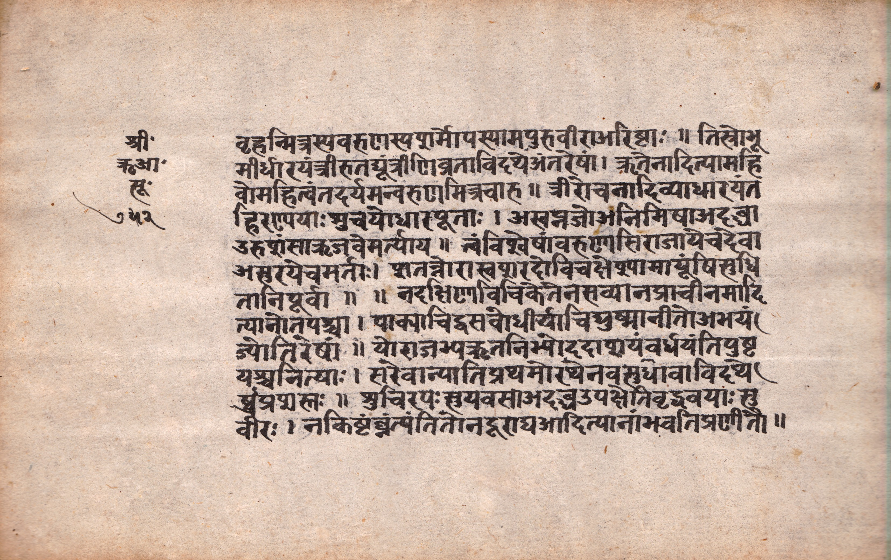
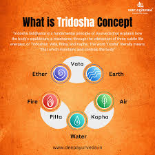

Introduction
The Charaka Samhita is one of the oldest and most important books of Ayurveda — India's traditional system of medicine. It mainly talks about how the human body works, what causes diseases, and how to treat them. Think of it as an ancient medical encyclopedia written thousands of years ago.

Figure 1: Ancient Manuscript of Charaka Samhita
This book was written somewhere between 600 BCE and 200 CE, which makes it one of the oldest medical books still available today. It covers a wide range of topics — what to eat, how to live a healthy life, how diseases develop, and how to treat them using herbs and natural methods.
What makes this book special is that Charaka did not just tell people what to do — he asked them to think and question. He wanted doctors to use logic and reason, not just blindly follow old traditions. This kind of thinking was very advanced for that time and is still respected today.
This book has been translated into many languages like Arabic, Persian, Latin, and German. Famous doctors from other countries, like Ibn Sina (Avicenna), read this book and used its ideas in their own medical writings. This shows how far the knowledge of Charaka spread across the world.
History & Authorship
This book was not written by one person alone. It has an interesting history of multiple authors working on it over many years.
The original book was written by Agnivesha, a student of the wise teacher Atreya. Later, a doctor named Charaka updated and improved it. Then, many years later, a scholar named Dridhabala fixed the missing parts. So the book we read today is the work of three important people over many centuries.
Figure 2: Traditional Depiction of Acharya Charaka
Key Historical Points:
Agnivesha, a student of the sage Atreya, wrote the first version.
Charaka rewrote and improved it around the 2nd Century CE.
Dridhabala filled in the missing parts in the 5th Century CE.
Written in Sanskrit, the classical language of ancient India.
Translated into Arabic in the 8th century, spreading its knowledge to the Arab world.
Recognized as an important part of India's cultural and knowledge heritage.
The Atreya School of Medicine
In ancient India, there were two main groups of doctors. One group, called the Atreya School, focused on medicine — treating diseases using herbs and diet. The other group, the Dhanvantari School, focused on surgery. The Charaka Samhita belongs to the Atreya School. The great teacher Atreya is believed to have taught medicine at the ancient University of Taxila, one of the world's first universities.
Charaka worked as the personal doctor of the king Kanishka the Great. But he was more than just a doctor — he believed that a good doctor must also be a kind, wise, and honest person.
Structure of the Text
The Charaka Samhita is divided into 8 parts with a total of 120 chapters. Each part covers a different topic related to health and medicine:
The basics. It explains the goals of Ayurveda, what a doctor should do, and how to classify food and medicines.
How to find out what disease a person has — its causes, signs, and how it develops in the body.
How the body is built, how it works, and how to examine a sick patient properly.
How a baby forms in the womb, how the body is structured, and the connection between body and soul.
How to treat diseases like fever, diabetes, skin problems, and many more — step by step.
How to prepare medicines using plants, minerals, and other natural materials.
Treatment of problems related to the head, eyes, and ears. This part was added later by Dridhabala.
How to predict whether a patient will get better or not, by looking at signs in the body.
The 17 Missing Chapters
Over time, 17 chapters of the original book were lost and could not be found. A scholar named Dridhabala in the 5th century CE tried his best to rewrite those missing chapters using old notes and oral traditions. Because of his effort, the book became complete again. That is why some scholars also call it the "Charaka-Dridhabala Samhita."
Key Medical Principles
The Charaka Samhita teaches us many important health ideas. Some of these ideas are so smart that even modern science agrees with them:

Figure 3: The Three Doshas (Vata, Pitta, Kapha)
1. The Three Body Types (Tridosha)
Charaka said that every person's health depends on the balance of three natural forces in the body. When they are in balance, you are healthy. When one goes out of balance, you get sick:
Controls all movement in the body — breathing, blood flow, thinking, and nerve signals.
Controls digestion and metabolism — how your body breaks down food and produces energy.
Controls the body's structure and fluids — keeps joints lubricated and gives the body its shape.
2. Agni — Your Digestive Fire
Charaka said that good digestion is the most important thing for staying healthy. He called this digestive power Agni (fire). If your digestion is weak, undigested waste called Ama (toxins) builds up in the body and causes disease. Simply put — eat well, digest well, stay healthy.
3. Ojas — Your Inner Strength
Ojas is described as the purest and finest part of all the body's tissues. It is what gives you a strong immune system, good energy, and a glowing appearance. When Ojas is strong, you feel healthy and happy. When it is weak, you fall sick easily.
4. The Five Basic Elements
Charaka believed that everything in the world — including our bodies — is made of five basic elements: Space, Air, Fire, Water, and Earth. These five elements combine in different ways to form the three body types (Vata, Pitta, Kapha). This unique combination in every person is called their Prakriti — or natural body type.
5. The Seven Body Tissues (Saptadhatu)
Charaka said the body is built from seven layers of tissues. Each tissue feeds and builds the next one, like a chain — starting from digested food and ending with reproductive tissue:
Plasma / Lymph — the liquid part of blood that carries nutrients from food to all body parts.
Blood — carries oxygen and keeps all organs alive and working.
Muscle — gives the body its shape, strength, and the ability to move.
Fat — stores energy for later use and keeps joints smooth and moving well.
Bone — forms the hard frame that supports and protects the whole body.
Bone Marrow / Nerve Tissue — fills bones and helps send signals through the nervous system.
Reproductive Tissue — the most refined tissue, responsible for reproduction and overall vitality.
6. Rules for a Good Doctor
The Charaka Samhita has a whole chapter on how a doctor should behave — and this was written long before the famous Hippocratic Oath in Western medicine! Charaka said a good doctor must be knowledgeable, clean, skilled, and kind. He should never give up on a patient, no matter how serious the illness, and should treat rich and poor people equally.
7. Prevention is Better Than Cure
Charaka strongly believed in stopping disease before it starts. He described a daily routine (Dinacharya) and a seasonal routine (Ritucharya) — simple habits for waking up, eating, exercising, and sleeping — that keep a person healthy all year round. This idea of preventive healthcare sounds very modern, but Charaka was teaching it thousands of years ago.
Reviews & Significance
Scholars and doctors from all over the world have studied this book for hundreds of years. Here is what they think about it:
Historical Significance
One of the oldest surviving medical texts in the world, predating many Western medical texts.
Modern Relevance
Its holistic approach to health is increasingly recognized in integrative medicine today.
Scientific Value
Contains detailed descriptions of anatomy, physiology, and pharmacology that were advanced for its time.
Cultural Impact
Remains a cornerstone of Ayurvedic education and practice across India and globally.
Global Legacy & Modern Relevance
The Charaka Samhita did not just stay in India. Its ideas traveled across the world and influenced medicine in many other countries too.
How It Spread to the Arab World
In the 8th century, this book was translated into Arabic and was read by famous Arab doctors like Al-Razi and Ibn Sina. These doctors used Charaka's ideas about digestion, body types, and herbal medicines in their own books. From the Arab world, these ideas slowly reached Europe as well.
Ayurveda Today
Today, the World Health Organization (WHO) officially recognizes Ayurveda as a valid medical system. The ideas from the Charaka Samhita are still taught in over 400 Ayurvedic colleges in India. Many doctors around the world now use Ayurvedic methods along with modern medicine to treat patients.
Scientists have also found that many of Charaka's observations were correct. For example, what he called Prameha (a urine disease) matches very closely with what we today call Type 2 Diabetes. Many herbal medicines he described have been tested in labs and found to actually work.
Saving the Manuscripts
Old handwritten copies of the Charaka Samhita were written on palm leaves and are very fragile. Today, organizations like the National Institute of Indian Medical Heritage (NIIMH) and the Ministry of AYUSH are working hard to scan and digitize these manuscripts so they are never lost again. Anyone in the world can now read them online.
What Modern Science Says
Scientists studied the plants listed in this book and confirmed that over 50 of them actually work as medicines.
Charaka's idea of Rasayana (staying young and healthy) is now being studied by scientists to slow down ageing.
These two herbal remedies from Charaka's book are now among the most studied natural medicines in the world.
Conclusion
The Charaka Samhita is not just an old book — it is a treasure of wisdom that is still useful today. Its simple but powerful ideas about eating right, living a healthy lifestyle, and treating diseases naturally are more relevant than ever.

Figure 4: Modern Ayurveda Practice Inspired by Charaka's Teachings.
What makes this book truly amazing is that Charaka was thinking like a scientist thousands of years ago. When most people at the time believed diseases were caused by evil spirits or gods, Charaka was saying — observe the patient, think logically, test your ideas, and find a real cause. That kind of thinking is what we call science today.
Charaka also had a beautiful idea about the doctor-patient relationship. He said that healing is a team effort — the doctor brings knowledge and care, and the patient brings trust and follows the advice. Together, they fight the disease. This simple idea is now a key part of modern medical ethics.
As more and more people look for natural and holistic ways to stay healthy, the Charaka Samhita gives us a great starting point. It is not just a book from the past — it is a guide for the future.